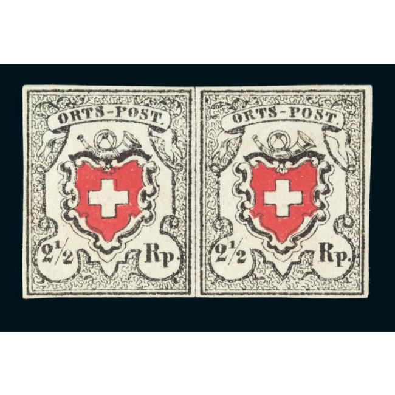
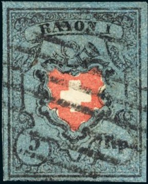

{kind=link}

Sperati forgery of the 2 1/2 r 'ORTS-POST' stamp; Reproduction 'B'
Return To Catalogue - Switzerland overview - Switzerland issues from 1850-1853 - Forgeries of the 1850 issue, part 1 - Cancels on first federal issues - Types of the 1850 issue, part 1 - Types of the 1850 issue, part 2 - Issues form 1854-1881
Note: on my website many of the
pictures can not be seen! They are of course present in the
catalogue;
contact me if you want to purchase the catalogue. /p>
Sperati made several forgeries of these stamps
2 1/2 r (Ortspost) Reproduction A and B (types
37 and 38; also exist printed together), reproduction C (constant
cancel)
2 1/2 r (Poste Locale) Reproduction A and B
(also printed together), reproduction C, reproduction D (constant
cancel), reproduction E, reproduction F, reproduction G;
Without cross: type 28,
5 r blue and red (Rayon I), type 4 with cross,
type 14 with cross,
10 r (Rayon II) type 11 with cross, type 12 with
cross,
10 r (Rayon II) strip of three consisting of
types 30-31-32,
15 r (Rayon III small figures), type 4 (constant
cancel) and type 9.
15 cts. (Rayon III), type 1 (constant cancel)
and type 3.
Sperati forgeries are quite rare and sought after.

Reproduction 'A' (left) and 'B' (right), pretending to be types
37 and 38. Sperati also made these reproductions without the
black framed cross.
Reproduction 'A' has a blotch of black color on the top right hand side of the 'S' of 'ORTS' and some smudges in the black line below the 'P' of 'POST'. The large '2' has a missing piece at the top right hand side.
Sperati forgery of the 2 1/2 r 'ORTS-POST' stamp; Reproduction
'B'

Proof of Reproduction 'C' with a constant cancel


Reproduction 'C' with constant cancel. However, in the forgery on
the right hand side, Sperati seems to have 'enhanced' the cancel
by drawing it in by hand.

I've been told that this is a Sperati forgery, but it does not
resemble Reproduction A,B or C....

Reproductions 'A' and 'B'. Reproduction 'A' has a oblique line
through the right bottom part of the 'p' of 'Rp'. Reproduction
'B' has an extending left horizontal line of the 'A' of 'LOCALE'.
Furthermore there is a small break in the black line below this
letter.


Zoom-in of Reproductions 'A' and 'B'


Reproduction 'C' with some black dots in the 'O' of 'LOCALE' and
a scratch line through the bottom right part of the 'R' of 'Rp'.

Proof of Reproduction 'D' with constant 'P.P.' cancel.

Reproduction 'D'


Reproduction 'E' has the white cross not horizontal on top, but
pointed (otherwise extremely deceptive).


Reproduction 'F' has two white dots in the vertical left part of
the 'R' of 'Rp'.
Reproduction 'G' has black smudge to the right of the center of
the large '2'. I've also seen it without the black frame around
the central cross.
Distinguishing characteristic of Reproduction 'G'.


Sperati 'proofs' in black of the 2 1/2 r Poste Locale
(Reproduction 'E' and 'G')

So-called Frame 'A', Cross 'A' Sperati forgery; pretending to be
genuine type 39.

So-called Frame 'B', Cross 'A' reproduction; pretending to be
genuine type 6; it is often (not always) found with this 'PP'
cancel in the same position. The 'O' of 'RAYON' is broken at the
bottom.
Reproduction A


Reproduction A (with and without cross) and genuine stamp of type
4
Reproduction 'A' has a break in the outer frameline just below the upper left corner. It was intended to be type 4 of the genuine stamps. The mouthpiece of the horn is not properly done according to the BPA. I've seen it with and without frame around the cross.
Reproduction B:

'Proof' of Reproduction 'B'


Reproduction 'B' and genuine type 14 (black and red on blue
stamp, which has the same types as the blue and red stamps).
Reproduction 'B' is pretending to be genuine position 14 of the plate. I'm not sure what the distinguishing characteristics are for this stamp. The mentioned dot in front of the '5' by the BPA also occurs in the genuine stamp. The horizontal line in the 'A' of 'RAYON' is not connected to the right leg of this letter. The 'Y' of this word has some smudges to the left top part.
Reproduction A


Left Sperati 'Reproduction A', right genuine type 11 stamp.
Reproduction 'A' is very deceptive, it is intended to be type 11 of the genuine stamps. There should be some defects at the right hand side of the 'A' of 'RAYON' and at the head of the vertical part of the 'R' of 'Rp'. But these differences are very hard to spot.
Reproduction B
Proof of Reproduction 'B'


Right: genuine type 12
Reproduction 'B' intends to be type 12 of the genuine stamps. Reproduction 'B' has a dot to the right of the 'Y' of 'RAYON', another dot in the frameline just above the 'O' of this word and yet another dot to the right of the 'N' of the same word. Also, a thick black dot can be found in the right hand side of the stamp, just to the left of the bottom loop (above 'Rp'.) in the yellow section (see the above proof, since the Sperati forgery with cancel has the dot almost covered with the cancel).
Reproduction C,D and E
Reproductions C,D and E are often printed together and represent types 30, 31 and 32 of the genuine stamp.

From left to right Sperati Reproductions 'C', 'D' and 'E'.


Genuine types 31 and 32.
Reproductions 'D' and 'E' have a dent in the upper part of the 'p' of 'Rp'. Reproduction 'C' has a small imperfection in the upper frameline, close to the right hand side. Sperati also made Reproductions 'C', 'D' and 'E' without the central black frameline.
Sperati forgery on letter, the cancel "FRAUENFELD 31/8"
was also forged by him.
Reproduction 'A' has a constant cancel (always in
the same position); here a 'proof'.

Reproduction 'B', the top of the right hand side of the 'Y' of
'RAYON' is broken.

Reproduction 'A' has the cancel always in the same spot (constant
cancel) and can therefore easily be recognized.

Sperati Reproduction 'B". The top righ part of the 'A' of
RAYON' has an extentsion, the 'O' of this word has smudges in it.
There is a red dot above the 't' of 'Cts'.
{kind=link}